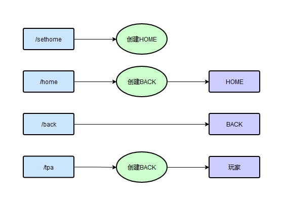

已更新部分插件支持新版本振金v1.1.0-pre7 pre8等等
需要放置在mods文件夹而非coremods
请自行到本站度娘盘【插件】-【新版】下载更新
在此页面更新一些插件
理论支持本站的所有振金版，娱乐版
如有错误，欢迎反馈
基础知识介绍
关于一个插件是否需要客户端和服务器都安装？
插件分为三类：
①客户端插件
只在客户端生效，比如坐标器
②服务端插件
只在服务器生效的，比如去离线惩罚
特殊的，客户端作为局域网主机也可以使用某些服务器插件，比如地精传送
③双端插件
需要双方均安装同一个版本的，比如反作弊，反变速等
地精传送MITETPA
写了一个服务器插件。（单机可用）
支持玩家间跨界（维度）传送。
客户端放到 .minecraft\coremods\
服务器放到 coremods\
运行时会在 coremods\TPA\ 文件夹下生成配置文件。
注意：
- 装新版本插件请删掉TPA文件夹
- 开新档时建议删掉coremods\TPA\ 下的所有.ga文件
更新v1.1
①所有的修改均不需要重启生效
更新v1.2
①使服主（管理员）可以在游戏内添加白名单
②可以关闭白名单模式
更新v1.3
①修复一个linux os下的严重错误
②添加/setback命令，可以手动设置BACK点
③所有配置默认全开启，萌新友好，开袋即食
可用指令
/sethome（设置当前位置为家）
/home（传送到HOME）
/back（传送到上个位置）
/tpayes（自动接受所有tpa请求）
/tpano（自动拒绝所有tpa请求，默认拒绝）
/tpa 玩家名（传送到玩家位置）
/tpaadd 玩家名（管理员可用，@a=全体在线玩家）
配置说明
初次运行服主需要手动修改两个ini文件：
①tpaConfig.ini是配置文件（0=关闭，1=打开）
home=1时允许/home
back=1时允许/back
time=30（传送冷却，3-3000，单位：秒）
whitelist=1时开启白名单
admin=管理员名（注意，不能为中文，可以用本网页下面的转码工具转成mc编码）
②tpaList.ini是传送白名单
将玩家名依次填入，每行一个。
不在名单上的无法传送。
中文名需要转成mc编码，或者让管理员直接游戏内添加
举例说明一
玩家Akarin想要传送到玩家Banana
①将Akarin加入tpaList.ini
②Banana输入/tpayes
③玩家Akarin输入/tpa Banana
举例说明二
玩家Akarin在矿洞死亡了，想要记录back点
①Akarin死亡后，不要点复活，直接输入/home飞尸
②Akarin点复活
③Akarin拿上物资输入/back回到死亡点
举例说明三
管理员要将【大_PI】添加到白名单
方法①将大_PI转码为\u5927_PI，打开tpaList.ini，将\u5927_PI添加到新的一行
方法②管理员游戏内输入/tpaadd 大_PI
方法③管理员游戏内输入/tpaadd @a
/home /tpa 都会自动记录back点
玩家死亡不会自动记录back点
已知bug: ID有空格会无法传送
地精坐标器MITEGAUI
和其他坐标器不兼容
从v1.1开始，改为双端插件
注意：v1.2和v1.1的区别仅仅是隐藏坐标
| 客户端 | 服务端 | 坐标 | 游侠联机 | |
|---|---|---|---|---|
| v1.0 | √ | 显示 | 不支持 | |
| v1.1 | √ | √ | 显示 | 支持 |
| v1.2 | √ | √ | 隐藏 | 支持 |
理论上支持本站所有振金版
因为内置坐标的原因
不支持娱乐版(v1.3)(v1.4)(v1.5)三个大版本
从(v1.6)开始重新支持
下载地址见本站主页下载链接页面
度娘盘【插件】目录
中文玩家名 ←转→ mc编码（unicode）
在这里输入中文玩家名或者mc编码